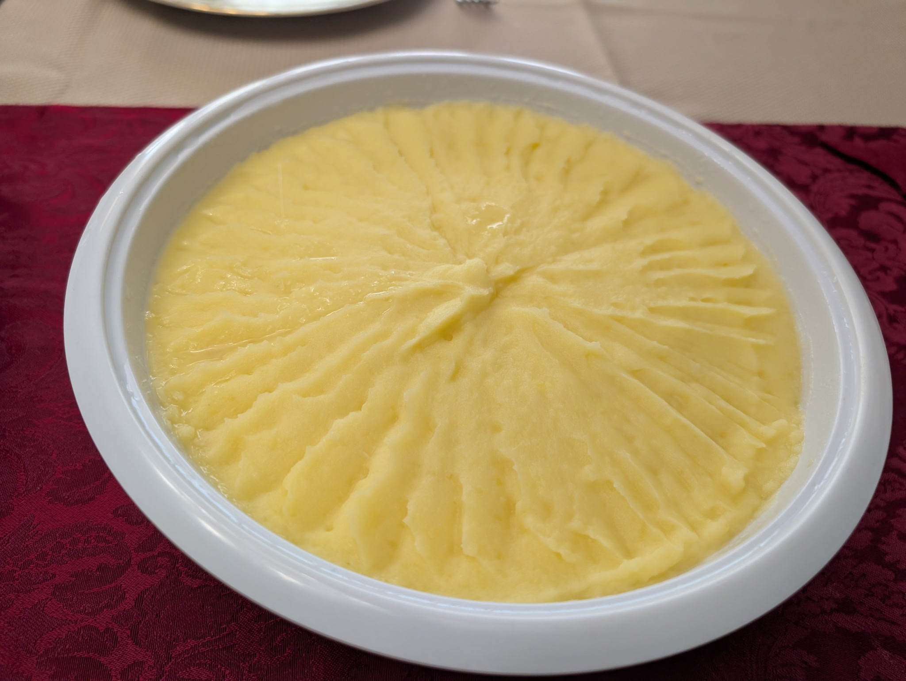

Mashed Potatoes

Ingredients
- 3 large russet potatoes, peeled and cut in half lengthwise
- ½ C whole milk or Half-and-Half
- ¼ C butter
- Salt and ground black pepper to taste
Directions
- Place potatoes in a large pot and cover with salted water and bring to a boil.
- Reduce heat to medium-low, cover, and simmer until tender, about 20 to 25 minutes.
- Drain potatoes, then return to the pot. Turn heat to high and allow potatoes to dry for about 30 seconds. Turn off heat.
- Mash potatoes with a potato masher twice around the pot, then add milk and butter. Continue to mash until smooth and fluffy. Whisk in salt and black pepper until evenly distributed, about 15 seconds.
Chef's Notes
- Pro Tip: Save 1-2 C of the boiling liquid to help make the final product smooth and silky
- Add 6-8 peeled garlic cloves to the pot before heating and mash with the boiled potatoes to make garlic mashed potatoes
- Either a good potato masher or a ricer is essential for this dish
Michael Fritsche
mbf@fritsche.org